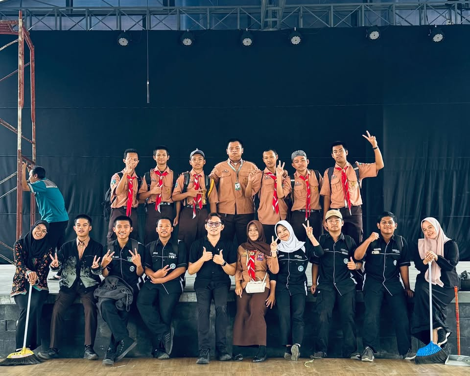

Bendahara I Multimedia

Di ekstrakurikuler Multimedia, saya belajar banyak hal tentang kreativitas visual, fotografi, dan dokumentasi. Menjabat sebagai Bendahara I adalah pengalaman baru yang mengajarkan saya tentang keuangan organisasi.
Jabatan sebagai Bendahara I
Sebagai Bendahara I, saya bertanggung jawab mengelola keuangan ekstrakurikuler — mulai dari pencatatan pemasukan, pengeluaran, hingga pelaporan keuangan kepada pembina. Ini pengalaman pertama saya belajar manajemen keuangan organisasi.
Event Photography
Selain tugas bendahara, saya juga aktif dalam event photography. Saya sering dipercaya untuk mendokumentasikan acara-acara sekolah seperti:
- MPLS (Masa Pengenalan Lingkungan Sekolah)
- Drama Kolaborasi antar kelas
- Hari Nasional (17 Agustus, Hari Kartini, dll)
- Berbagai acara sekolah lainnya
Dokumentasi Sekolah

Pelajaran Berharga
- Manajemen keuangan — Mengelola uang organisasi dengan amanah
- Kreativitas visual — Belajar komposisi & angle foto
- Ketelitian — Detail kecil dalam fotografi sangat berarti
- Kolaborasi — Bekerja sama dengan tim dokumentasi sekolah
Kesimpulan
Multimedia membuka mata saya tentang pentingnya dokumentasi visual. Setiap momen yang saya abadikan menjadi kenangan yang tak ternilai bagi banyak orang.